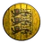

Las Civilizaciones
Age of Empires II: Definitive Edition reúne numerosas civilizaciones inspiradas en diferentes pueblos e imperios de la historia. Cada una cuenta con sus propias fortalezas, unidades especiales y características que determinan su estilo de juego.
Conocerlas es fundamental para elegir la estrategia adecuada, aprovechar sus ventajas y estar preparado para enfrentarse a cualquier rival. ¡Es hora de descubrirlas!
Civilizaciones con mayor tasa de victorias
Los porcentajes corresponden a tasas de victoria consultadas en diversas fuentes, por lo que podrían no ser totalmente precisos.
Partidas clasificatorias 1v1
Datos de 2026, Random Map:
 Romanos — 55,1 %.
Su infantería recibe el doble de efecto de las mejoras de armadura de la herrería. Fuente wiki: Romanos
Romanos — 55,1 %.
Su infantería recibe el doble de efecto de las mejoras de armadura de la herrería. Fuente wiki: Romanos- Armenios — 53,3 %.
Acceden una edad antes a las mejoras de espadachines de espada larga y superiores, y a la línea de lanceros; el Arquero compuesto ignora armadura. Fuente wiki: Armenios

Búlgaros — 52,9 %.
Mejoran gratis la línea de milicia y su unidad única, el Konnik, continúa luchando como infantería al desmontar. Fuente wiki: Búlgaros- Japoneses — 52,3 %. Su infantería ataca un 33 % más rápido desde la Edad Feudal; el Samurai es su unidad única. Fuente wiki: Japoneses
Fuente de estadísticas: AoE Buddy, estadísticas de civilizaciones.
Partidas clasificatorias por equipos (TG)
Datos de 2026, Random Map Team Game.
- Romanos — 54,7 %.
Sus aldeanos recolectan, construyen y reparan un 5 % más rápido; los escorpiones cuestan menos oro. Fuente wiki: Romanos
- Búlgaros — 53,0 %.
Las tecnologías de herrería y taller de asedio cuestan menos comida; su bonificación de equipo acelera la herrería. Fuente wiki: Búlgaros
- Malienses — 52,8 %.
Las unidades del cuartel ganan armadura antiproyectiles y los edificios cuestan menos madera. Fuente wiki: Malienses
- Armenios — 52,7 %.
Su bonificación de equipo da más alcance de visión a la infantería; el Sacerdote guerrero puede luchar, sanar y recoger reliquias. Fuente wiki: Armenios
Fuente de estadísticas: EmpireStats, estadísticas de civilizaciones.